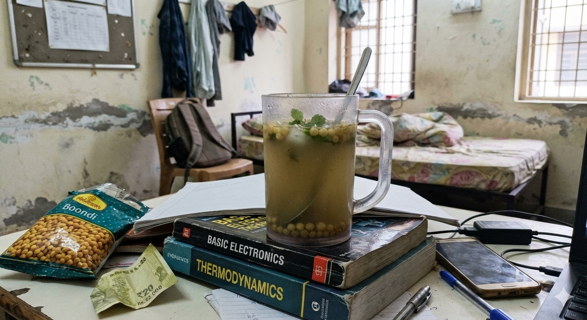

Spicy Jaljeera

Prep time: 10 mins Cook time: 0 mins Serves: 2-3
Ingredients
- 1 tbsp jaljeera masala
- 2-3 tsp chat masala
- 1 tbsp tamarind pulp (optional)
- 1 tsp black salt
- 1/2 tsp regular salt
- 1 tsp sugar (optional)
- Juice of 1-2 lemon
- 4 cups chilled/normal water
- Boondi for garnish (optional)
Steps
- If you want to use tamarind pulp, mix it with a little water into a smooth paste.
- Mix water (and the paste above if used) with jaljeera masala, black salt, salt, sugar, chat masala and lemon juice.
- Stir well and adjust the seasoning to taste.
- Top it with boondi.
Backstory: A family favorite, Usually made during summer. My father's favorite as it is his recipe. (Original recipe by Chef Papa.)